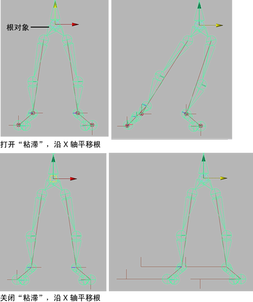
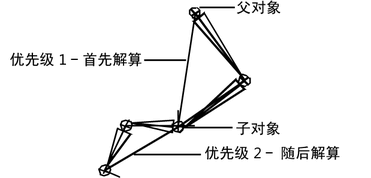
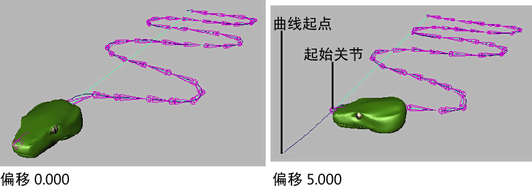
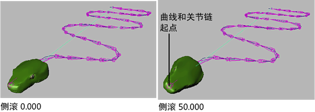

变换属性(Transform Attributes)
请参见常规属性。
骨架信息(Skeleton Info)
- 起始关节(Start Joint)
-
显示起始关节 IK 控制柄的关节链的名称。您可以单击“>”图标按钮打开起始关节的“属性编辑器”(Attribute Editor)。
- 末端效应器(End Effector)
-
显示 IK 控制柄的末端效应器的名称。您可以单击“>”图标按钮打开末端效应器的“属性编辑器”(Attribute Editor)。
IK 控制柄属性(IK Handle Attributes)
- 捕捉启用(Snap Enable)
-
启用该属性时，当前 IK 控制柄将捕捉回其末关节的位置。默认设置为启用。
- 粘滞(Stickiness)
-
如果该属性处于启用状态且当前 IK 控制柄没有任何关键帧，当您使用其他 IK 控制柄或通过直接平移、旋转或缩放关节来调整关节姿势时，当前 IK 控制柄将粘滞到其当前位置。如果该属性处于启用状态且当前控制柄上具有关键帧，则忽略“粘滞”(Stickiness)。默认设置为“禁用”(off)。
当使用 IK 控制柄调整关节链的姿势以阻止不需要的关节链移动时，您可以使用“粘滞”(Stickiness)。例如，如果在移动和调整模型髋部的姿势时希望脚稳固站立在地板上，您可以为模型腿部的 IK 控制柄启用“粘滞”(Stickiness)。
 - 优先级(Priority)
-
指定当前 IK 控制柄的优先级。“优先级”(Priority)仅在关节链具有多个 IK 控制柄时有用。“优先级”(Priority)旨在确保以正确的顺序解算关节链的 IK 控制柄，以便正确生成所需动画。
当您为关节链的 IK 控制柄设定“优先级”(Priority)时，Maya 根据每个控制柄在层次中的位置计算其优先级。“优先级”(Priority)为 1 的 IK 控制柄具有最高优先级并将首先旋转关节。“优先级”(Priority)为 2 的 IK 控制柄具有第二优先级并将随后旋转关节，依此类推。默认值为 1。
 - 权重(Weight)
-
设定当前 IK 控制柄的权重值。
权重值，与 IK 控制柄的末端效应器及其目标之间的当前距离结合使用来排列以下项目的优先次序：当前 IK 链的解算、当前 IK 链的其他具有相同“优先级”(Priority)设置的 IK 控制柄的解算。请参见优先级。
当具有相同“优先级”(Priority)的两个或多个 IK 控制柄的末端效应器不能同时达到它们的目标时，首先解算末端效应器距离其目标最远并且权重最大的 IK 控制柄。
不适用于“单链解算器”(Single-Chain Solver)、“旋转平面解算器”(Rotate-Plane Solver)或“ik2Bsolver”控制柄。
- 位置方向权重(POWeight)
-
指定当前 IK 控制柄的末端效应器是否支持达到其目标的方向或位置。
如果将该属性设定为 1，则末端效应器将尝试达到 IK 控制柄的位置。如果将该属性设定为 0，则末端效应器仅尝试达到 IK 控制柄的方向。值为 0.5 指定末端效应器以同等程度尽可能达到位置和方向。默认值为 1.000。
不适用于“ik2Bsolver”或“旋转平面解算器”(Rotate-Plane Solver)控制柄。
IK 解算器属性(IK Solver Attributes)
- IK 融合
-
“IK 融合”(Ik Blend)值为 0.000 表示将动画模式设定为纯 FK，“IK 融合”(Ik Blend)值为 1.000 表示将动画模式设定为纯 IK。如果“IK 融合”(Ik Blend)值是介于 0.000 和 1.000 之间的数值，则当前骨架上的动画采用融合的 IK 和 FK。请参见 IK/FK 融合。
注：除了在多个帧上融合 IK 和 FK 动画外，还可以在单个帧上进行融合。在单帧上融合会立即将 IK 切换为 FK 或将 FK 切换为 IK。
- IK FK 控制(Ik Fk Control)
-
使您可以操纵具有动画 IK 控制柄的关节链中的各关节，并设置其关键帧。“IK FK 控制”(Ik Fk Control)不但位于局部“IK 控制柄属性”(IK Handle Attributes)中，还位于全局骨架设置（“骨架 > 启用 IK/FK 控制”(Skeleton > Enable IK/FK Control)）中。
注： “IK FK 控制”(Ik Fk Control)属性将禁用全局和局部“IK 控制柄捕捉”(IK Handle Snap)。 - IK 解算器(IK Solver)
-
为 IK 控制柄指定解算器的类型。请参见 IK 解算器。默认选项如下所示：
- 单链(Single-chain)
-
为 IK 单链控制柄选择“单链解算器”(Single-Chain Solver)。
- 旋转平面(Rotate-Plane)
-
为 IK 旋转平面控制柄选择“旋转平面解算器”(Rotate-Plane Solver)。
- 极向量(Pole Vector)
-
指定极向量的结束点的位置。
极向量仅适用于使用旋转平面解算器的 IK 控制柄（“IK 解算器”(IK Solver)设定为“旋转平面解算器”(Rotate-Plane Solver)）。请参见旋转平面 IK 解算器。
注： 当您选择骨架 > IK 样条线控制柄工具(Skeleton > IK Spline Handle Tool) > 时，“扭曲类型”(Twist Type)、“根在曲线上”(Root On Curve)和“根扭曲模式”(Root Twist Mode)可用。请参见 IK 样条线控制柄工具。
时，“扭曲类型”(Twist Type)、“根在曲线上”(Root On Curve)和“根扭曲模式”(Root Twist Mode)可用。请参见 IK 样条线控制柄工具。
- 偏移(Offset)
-
该属性仅适用于样条线 IK 控制柄和“根在曲线上”(Root On Curve)处于启用状态的情况。
设定 IK 链的起始关节的根从样条线 IK 曲线的开始处偏移的量。
 - 侧滚(Roll)
-
该属性仅适用于样条线 IK 控制柄。
从样条线 IK 控制柄的起始关节侧滚整个关节链。
 - 扭曲(Twist)
-
不适用于单链 IK 控制柄。
按照指定的量从末关节扭曲关节链。
您还可以通过操纵扭曲圆盘控制关节链的旋转。请参见使用样条线 IK 曲线为关节设定姿势。
- 扭曲类型(Twist Type)
-
该属性仅适用于样条线 IK 控制柄。
该选项指定如何在关节链中发生扭曲。
- 线性(Linear)
-
均匀扭曲所有部位。
- 缓入(Ease In)
-
结束处扭曲比开始处多。
- 缓出(Ease Out)
-
开始处扭曲比结束处多。
- 缓入缓出(Ease In Out)
-
与两端相比，中间扭曲更多。
- 根在曲线上(Root On Curve)
-
该属性仅适用于样条线 IK 控制柄。
请参见 IK 样条线控制柄工具。
重要： 如果在样条线 IK 控制柄的“IK 解算器属性”(IK Solver Attributes)中禁用“根在曲线上”(Root On Curve)，解算器将忽略之前使用“偏移”(Offset)设置了关键帧的任何运动。设定关键帧时，“根在曲线上”(Root On Curve)要么禁用，要么启用，而不能同时处于这两种状态。 - 根扭曲模式(Root Twist Mode)
-
该属性仅适用于样条线 IK 控制柄。
请参见 IK 样条线控制柄工具。
添加高级扭曲控制属性(Add Advanced Twist Control Attributes)
- 启用扭曲控制(Enable Twist Controls)
-
启用时，将上方向向量约束应用于当前“样条线 IK”(Spline IK)控制柄的链中每个关节的本地帧。
世界上方向类型(World Up Type)
指定应用于当前“样条线 IK”(Spline IK)的链中关节的上方向向量约束的类型。
- 场景上方向(Scene Up)
-
将场景的上方向设置为所有关节的“上方向向量”(Up vector)。
- 对象上方向(Object Up)
-
将每个关节的“上方向向量”(Up vector)设定为从该关节到指定对象的中心的方向。
在“世界上方向对象”(World Up Object)字段中键入对象的名称。
- 对象上方向(开始/结束) (Object Up (Start/End))
-
将第一个和最后一个关节的“上方向向量”(Up vector)设定为从关节到指定开始和结束对象的中心的方向。
在“世界上方向对象”(World Up Object)和“世界上方向对象 2”(World Up Object 2)字段中键入起始关节和末关节上方向对象的名称。将沿链插入链的开始和结束的结果，用来为中间关节提供上方向向量。
- 对象旋转上方向(Object Rotation Up)
-
将指定对象的局部空间中的特定向量设定为所有关节的“上方向向量”(Up vector)。
在“上方向向量”(Up Vector)字段中键入局部向量，在“世界上方向对象”(World Up Object)字段中键入对象名称。“上方向向量”(Up Vector)的默认值是 (0,1,0)。这意味着该对象的正 Y 轴将用作“上方向向量”(Up Vector)。
- 对象旋转上方向(开始/结束) (Object Rotation Up (Start/End))
-
将指定对象的局部空间中的特定向量设定为当前链中起始关节和末关节的“上方向向量”(Up vector)。
在“上方向向量”(Up Vector)和“世界上方向对象”(World Up Object)字段中键入起始关节的局部向量和对象名称，在“上方向向量 2”(Up Vector 2)和“世界上方向对象 2”(World Up Object 2)字段中键入末关节的局部向量和对象名称。将沿链插入链的开始和结束的结果，用来为中间关节提供上方向向量。
- 向量(Vector)
-
将世界空间中的特定向量设定为所有关节的上方向向量。
在“上方向向量”(Up Vector)字段中键入世界空间上方向向量。
- 向量(开始/结束) (Vector (Start/End))
-
将世界空间中的特定向量设定为起始关节和末关节的上方向向量。
在“上方向向量”(Up Vector)字段中键入起始关节世界空间上方向向量，在“上方向向量 2”(Up Vector 2)字段中键入末关节世界空间上方向向量。将沿链插入链的开始和结束的结果，用来为中间关节提供上方向向量。
- 相对(Relative)
-
将“样条线 IK”(Spline IK)设定为与在先前版本的 Maya（低于 Maya 5.0.1）中有相同行为。上方向向量约束不适用于链中的关节。
- 正向轴(Forward Axis)
-
指定哪个局部关节轴与世界空间上方向向量对齐。正 Y 轴是默认设置。
如果您选择任一最近轴，则在每个关节处使用正轴还是负轴取决于当前哪个轴距离世界空间上方向向量比较近。“最近”(Closest)选项允许您保留其轴每隔几个关节即翻转的关节链的方向。
注： 我们建议您不要将“最近”用于动画，因为这容易导致关节链中出现翻转。 - 上方向向量(Up Vector)
-
当“世界上方向类型”(World Up Type)为“对象旋转上方向”(Object Rotation Up)或“对象旋转上方向(开始/结束)”(Object Rotation Up (Start/End))时，这些字段中的值将在指定上方向对象的局部空间中指定向量。
当“世界上方向类型”(World Up Type)为“向量”(Vector)或“向量(开始/结束)”(Vector (Start/End))时，这些字段中的值将指定世界空间世界向量。
“上方向向量”(Up Vector)字段适用于起始关节，“上方向向量 2”(Up Vector 2)字段适用于末关节。
- 世界上方向对象(World Up Object)
-
当“世界上方向类型”(World Up Type)为“对象上方向”(Object Up)、“对象(开始/结束)”(Object (Start/End))、“对象旋转上方向”(Object Rotation Up)或“对象旋转上方向(开始/结束)”(Object Rotation Up (Start/End))时，该字段中的名称将指定要用于计算上方向向量的对象。该字段中的名称将变换的世界空间矩阵与 IK 控制柄相连接。
“世界上方向对象”(World Up Object)字段适用于起始关节，“世界上方向对象 2”(World Up Object 2)字段适用于末关节。
扭曲值类型(Twist Value Type)
设定附加的、用户定义的扭曲沿关节链分布的方式。
- 总计(Total)
-
将附加的扭曲量应用到链中的末关节。扭曲以度为单位。
其余关节的扭曲值是在起始关节处从 0 开始插值的。使用的插值类型由“扭曲类型”(Twist Type)属性确定。
- 开始/结束(Start/End)
-
将附加的扭曲量应用到链中的起始关节和末关节。扭曲以度为单位。
其余关节的扭曲值是使用由“扭曲类型”(Twist Type)属性指定的插值类型插值的。
- 渐变(Ramp)
-
将纹理连接到“扭曲渐变”(Twist Ramp)属性，为整个链提供显式扭曲值。扭曲以度为单位。
为每个关节指定了 UV 纹理坐标 (0,j/N)，其中 j 是链中的关节索引，N 是链中的关节数。由纹理返回的 Alpha 值乘以“扭曲渐变倍增”(Twist Ramp Multiplier)属性的值即得到每个关节的扭曲。
- 开始/结束扭曲(Start/End Twist)
-
为链的起始关节和末关节指定扭曲值。仅当“扭曲值类型”(Twist Value Type)设定为“开始/结束”(Start/End)时，这些字段可用。
- 扭曲渐变(Twist Ramp)
-
通过连接到纹理沿链指定扭曲。仅当“扭曲值类型”(Twist Value Type)设定为“纹理”(Texture)时，该字段可用。
- 扭曲渐变倍增(Twist Ramp Multiplier)
-
由于纹理通常返回 [0, 1] 范围内的值，该倍增可确保使用适当的范围映射扭曲值。仅当“扭曲值类型”(Twist Value Type)设定为“纹理”(Texture)时，该字段用可。
注： “扭曲值”(Twist Value)属性适于与“侧滚”(Roll)和“根扭曲模式”(Root Twist Mode)属性一同使用，不会干扰或取代它们的功能。
IK 弹簧解算器属性(IK Spring Solver Attributes)
静止姿势(Rest Pose)
静止姿势设定弹簧 IK 关节链的基本外观。静止姿势还可确定如何沿弹簧 IK 关节链计算角度偏移。
默认情况下，静止姿势是创建 IK 控制柄时弹簧 IK 关节链的姿势（关节的方向和位置）。
- 设置为当前姿势(Set to Current Pose)
-
将当前弹簧 IK 关节链的姿势设置为其 IK 控制柄的静止姿势。
弹簧角度偏移(Spring Angle Bias)
- 选定位置(Selected Position)
-
在“弹簧角度偏移”(Spring Angle Bias)渐变上显示角度偏移图标的位置。该字段为只读字段。
- 选定值(Selected Value)
-
为选定的角度偏移图标指定偏移值。角度偏移是确定某关节相对于同一链中其他关节旋转速度的相对权重。角度偏移可用作倍增，以影响目标关节链中各骨骼之间的角度。
例如，如果关节链中第一个角度的“选定值”(Selected Value)为 1，该链第二个角度的“选定值”(Selected Value)为 0，则第一个角度的移动速度是第二个角度的两倍。
最小“选定值”(Selected Value)为 0，最大为 1。
- 插值(Interpolation)
-
该属性继承自 ramp节点并且不会对弹簧 IK 解算器产生任何影响。
- 弹簧角度偏移(Spring Angle Bias) 渐变
-
显示当前弹簧 IK 关节链的角度偏移（“选定值”(Selected Values)）与其目标角度（骨胳之间的角度）之间的关系。渐变上的图标表示当前弹簧 IK 关节链的“选定值”(Selected Values)。渐变上的这些图标的位置通过以下方式确定：
- 在垂直轴上，图标的当前角度偏移（“选定值”(Selected Values)）。
- 在水平轴上，弹簧 IK 关节链中骨骼间角度的出现顺序（从起始关节到末关节）。
例如，对于具有五个关节的弹簧 IK 关节链，将在“弹簧角度偏移”(Spring Angle Bias)的“渐变”上显示三个图标。沿渐变的水平轴的第一个图标表示距离弹簧 IK 关节链的起始关节最近的目标角度的“选定值”(Selected Value)。